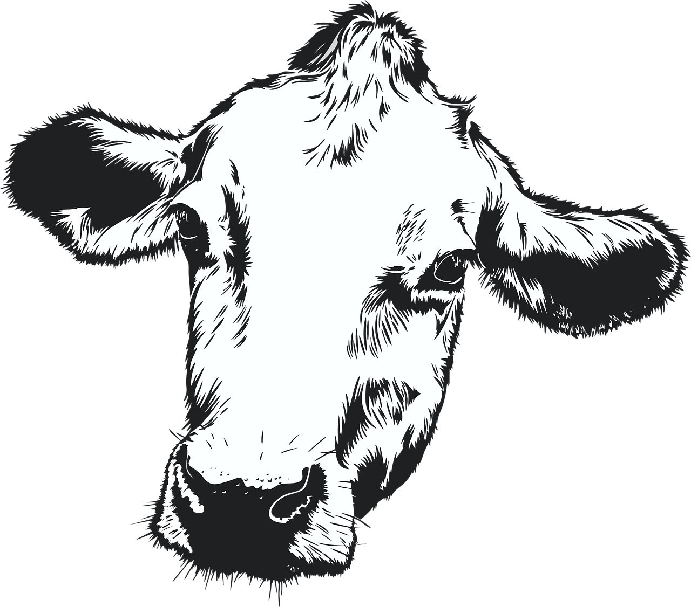

Para a pecuária de corte apresentamos um sistema completo para cada bovino, desde o controle sanitário sobre
as vacinas e medicações até mesmo sobre o aprimoramento genético do gado. Fora isso, há outras ferramentas
como o controle da nutrição, da reprodução e até mesmo do pasto.
Aqui se pode cortar o gado, até mesmo cortar os gastos mas nunca o lucro!!
Software para gestão de propriedades com ênfase em pecuária
Manejo completo, quantidade de vacas produtivas, peso dos animais em diferentes fases da vida, prontuário fácil de cada animal, produção diária de IEP, nutrição animal, duração da lactação, situação financeira da fazenda, estoque, aparelhagem e veículos, controle e emissão de notas fiscais, controle e fiscalização dos funcionários, entre outras funções.
Aprimoramento genético, integração com maiores APIs do mercado para controle genético, taxa de prenhez, concepção, protocolos de reprodução, planejamento do controle reprodutivo, entre outras funções.
Prontuário individual de cada animal, controle de doenças, evolução dos exames, protocolos de parto, protocolos de tratamentos, taxas de sobrevivência, calendário vacinal, agenda de eventos, lembretes de vacinação, entre outras funções.
Notificações com lembretes diários e um veterinário a sua disposição*
Teste grátisGerencie de onde estiver de forma online verificando em tempo real os relatórios, atividades, ações de funcionários e localização de maquinários*.
Um sistema super seguro para seus dados, onde você controla as ações e edições dos seus funcionários para nada passar batido, além de termos uma aba onde pode se acionar a polícia e já exportar os dados para facilitar a busca do que foi lesado. Também contamos com chips geolocalizadores para facilitar seu dia-dia
Começou a preencher uma sessão e alguém precisa de informação de outra? Temos abas dentro do sistema para não precisar voltar e conseguir gerenciar simultaneamente. Importe também planilhas e prontuários e preencha automaticamente exames. Facilite a gestão com toda a organização que nem planilhas te dão. Verificação individual de animais e estatísticas.
Manejo inteligente e avançado, Reprodução, Genética e Nutrição são essenciais para toda fazenda e por isso contamos com eles no módulo básico e inicial. Emissão de notas fiscais também é necessária para todo produtor rural e por isso contamos com elas em nosso sistema.
Tenha a mais avançada tecnologia dentro da sua fazenda. Drones e aparelhos de ponta para facilitar seu dia-a-dia e automatizar sua produção. Racionalize o trabalho, melhore e diminua a mão de obra
Tenha acesso a inúmeros relatórios feitos por profissionais consultores da área para te auxiliar nas melhores decisões para seu negócio. Conte com sugestões, análises de melhorias e produção, análise de mercado, mentorias, e toda a consultoria que pessoas reais podem te oferecer. Consulte nossos consultores para as melhores tomadas de decisões.
Tenha um veterinário de prontidão para sua fazenda, para avaliar seus animais, consultá-los, verificar moléstias e exames, além de realizar melhorias nos procedimentos para melhorar a qualidade da sua produção e diminuir abortos, descartes e natimortos. Consultas onlines e prontidão de emergência também estão inclusos. Um produção sustentável e lucrativa.
 Gestão do Rebanho e da produção de LeiteEstoque, Administrativo e FinanceiroNúmero de usuários ILIMITADONúmero de fazendas personalizadoSem taxa de adesão no plano anualSanidade e eventos veterinários com prontuário individual
de cada animal (pode também fazer upload de receitas e
prontuários veterinários)Reprodução e melhoramento genéticoAssistência 24 horas via WhatsApp, E-mail e Chat e
Treinamento OnlineSegurança dos dados e da fazenda com botões de reporte a
polícia militarNutrição animalManejo animalAlertas produtivosEmissão de notas fiscaisGestão do Rebanho e da produção de leiteEstoque, Administrativo e Financeiro com relatóriosNúmero de usuários ILIMITADONúmero de fazendas personalizadoSem taxa de adesão no plano anualSanidade e eventos veterinários com prontuário individual
de cada
animal (pode também fazer upload de receitas e
prontuários veterinários)Reprodução e melhoramento genéticoAssistência 24 horas via WhatsApp, E-mail, Chat e
Telefone
e Treinamento Online e PresencialNutrição animal com Estratégias de DietasSegurança dos dados e da fazenda com botões de reporte a
polícia militar e chips para localização em tempo real de
maquinário e câmeras de segurança.Manejo animal com cálculos inteligentesAlertas produtivos e otimização de compra e vendaEmissão de notas fiscaisVeterinário para consultoria e melhoria dos
procedimentos,
com visita presencial e disponível em horário comercial para
Integração com qualquer API de monitoramento que
necessitar
Gestão do Rebanho e da produção de LeiteEstoque, Administrativo e FinanceiroNúmero de usuários ILIMITADONúmero de fazendas personalizadoSem taxa de adesão no plano anualSanidade e eventos veterinários com prontuário individual
de cada animal (pode também fazer upload de receitas e
prontuários veterinários)Reprodução e melhoramento genéticoAssistência 24 horas via WhatsApp, E-mail e Chat e
Treinamento OnlineSegurança dos dados e da fazenda com botões de reporte a
polícia militarNutrição animalManejo animalAlertas produtivosEmissão de notas fiscaisGestão do Rebanho e da produção de leiteEstoque, Administrativo e Financeiro com relatóriosNúmero de usuários ILIMITADONúmero de fazendas personalizadoSem taxa de adesão no plano anualSanidade e eventos veterinários com prontuário individual
de cada
animal (pode também fazer upload de receitas e
prontuários veterinários)Reprodução e melhoramento genéticoAssistência 24 horas via WhatsApp, E-mail, Chat e
Telefone
e Treinamento Online e PresencialNutrição animal com Estratégias de DietasSegurança dos dados e da fazenda com botões de reporte a
polícia militar e chips para localização em tempo real de
maquinário e câmeras de segurança.Manejo animal com cálculos inteligentesAlertas produtivos e otimização de compra e vendaEmissão de notas fiscaisVeterinário para consultoria e melhoria dos
procedimentos,
com visita presencial e disponível em horário comercial para
Integração com qualquer API de monitoramento que
necessitar
*2 visitas presenciais de 2 horas cada a cada mês com relatórios e treinamentos para melhorias de manejo, reprodução e parto
Gestão do Rebanho e da produção de LeiteEstoque, Administrativo e Financeiro com relatóriosNúmero de usuários ILIMITADONúmero de fazendas personalizadoSem taxa de adesão no plano anualSanidade e eventos veterinários com prontuário individual
de cada
animal (pode também fazer upload de receitas e
prontuários veterinários)Reprodução e melhoramento genéticoAssistência 24 horas via WhatsApp, E-mail e Chat e
Treinamento
Online e PresencialNutrição animal e estrategia de dietaManejo animal com cálculos e relatórios inteligentesAlertas produtivos e otimização de compra e vendaSegurança dos dados e da fazenda com botões de reporte a
polícia militar e chips para localização em tempo real de
maquinário e câmeras de segurança.Emissão de notas fiscaisVeterinário especialista para consultoria e melhoria dos
procedimentos, com visita presencial e disponível 24 horasl
para emergências*.Integração com qualquer API de monitoramento que
necessitar
Consultores e Analistas reais com Lunazu Productivity +
com
relatórios semanaisDrones, chips e brincos bovinos com Lunazu Tech+Assistência personalizada e qualquer implementação
necessária*1 visita semanal com relatórios e treinamentos para a equipe para melhorias no manejo, reprodução e parto e problemas na fazenda
Entendemos que sua necessidade é única e cada cliente é um caso em especial. Criamos 3 planos que podem ser alterados com base no que você precisa e na medida certa. Sua fazenda vale muito e sua produção é de suma importância e contribui para abastecimento da população brasileira. Nossos planos básicos contam com todo suporte para melhoramento genético, manejo e segurança que os outros aplicativos não oferecem como base. Nossos planos plus contam com consultoria com profissionais da área que irão participar ativamente da sua produção, chips de geolocalização para facilitar a localizar veículos e animais, brincos bovinos, drones e um veterinário disponível para sua fazenda te auxiliando com melhorias. São confortos reais para você não ter dor de cabeça.
O que está esperando? Venha para a LUNAZU!
Se interessou no teste gratuito ou ficou alguma dúvida? Fala com a gente!
Estamos aqui para te ajudar, então assim que nos enviar uma mensagem um dos nossos técnicos irá falar diretamente com você.